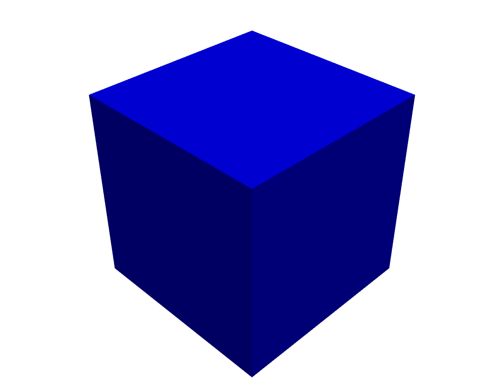

pyvista.Plotter¶
- class Plotter(*args, **kwargs)¶
Plotting object to display vtk meshes or numpy arrays.
- Parameters
off_screen (bool, optional) – Renders off screen when
True. Useful for automated screenshots.notebook (bool, optional) – When
True, the resulting plot is placed inline a jupyter notebook. Assumes a jupyter console is active. Automatically enablesoff_screen.shape (list or tuple, optional) –
Number of sub-render windows inside of the main window. Specify two across with
shape=(2, 1)and a two by two grid withshape=(2, 2). By default there is only one render window. Can also accept a string descriptor as shape. E.g.:shape="3|1"means 3 plots on the left and 1 on the right,shape="4/2"means 4 plots on top and 2 at the bottom.
border (bool, optional) – Draw a border around each render window. Default
False.border_color (string or 3 item list, optional) –
Either a string, rgb list, or hex color string. For example:
color='white'color='w'color=[1, 1, 1]color='#FFFFFF'
window_size (list, optional) – Window size in pixels. Defaults to
[1024, 768], unless set differently in the relevant theme’swindow_sizeproperty.multi_samples (int, optional) – The number of multi-samples used to mitigate aliasing. 4 is a good default but 8 will have better results with a potential impact on performance.
line_smoothing (bool, optional) – If
True, enable line smoothing.point_smoothing (bool, optional) – If
True, enable point smoothing.polygon_smoothing (bool, optional) – If
True, enable polygon smoothing.lighting (str, optional) –
What lighting to set up for the plotter. Accepted options:
'light_kit': a vtk Light Kit composed of 5 lights.'three lights': illumination using 3 lights.'none': no light sources at instantiation.
The default is a
'light_kit'(to be precise, 5 separate lights that act like a Light Kit).theme (pyvista.themes.DefaultTheme, optional) – Plot-specific theme.
Examples
>>> import pyvista >>> from pyvista import examples >>> mesh = examples.load_hexbeam() >>> another_mesh = examples.load_uniform() >>> plotter = pyvista.Plotter() >>> actor = plotter.add_mesh(mesh, color='red') >>> actor = plotter.add_mesh(another_mesh, color='blue') >>> plotter.show()
Methods
Plotter.add_actor(uinput[, reset_camera, …])Add an actor to render window.
Plotter.add_arrows(cent, direction[, mag])Add arrows to the plotter.
Plotter.add_axes([interactive, line_width, …])Add an interactive axes widget in the bottom left corner.
Plotter.add_axes_at_origin([x_color, …])Add axes actor at origin.
Plotter.add_background_image(image_path[, …])Add a background image to a plot.
Plotter.add_bounding_box([color, …])Add an unlabeled and unticked box at the boundaries of plot.
Plotter.add_box_widget(callback[, bounds, …])Add a box widget to the scene.
Plotter.add_checkbox_button_widget(callback)Add a checkbox button widget to the scene.
Plotter.add_floor([face, i_resolution, …])Show a floor mesh.
Plotter.add_key_event(key, callback)Add a function to callback when the given key is pressed.
Plotter.add_legend([labels, bcolor, border, …])Add a legend to render window.
Plotter.add_light(light[, only_active])Add a Light to the scene.
Plotter.add_line_widget(callback[, bounds, …])Add a line widget to the scene.
Plotter.add_lines(lines[, color, width, …])Add lines to the plotting object.
Plotter.add_mesh(mesh[, color, style, …])Add any PyVista/VTK mesh or dataset that PyVista can wrap to the scene.
Plotter.add_mesh_clip_box(mesh[, invert, …])Clip a mesh using a box widget.
Plotter.add_mesh_clip_plane(mesh[, normal, …])Clip a mesh using a plane widget.
Plotter.add_mesh_isovalue(mesh[, scalars, …])Create a contour of a mesh with a slider.
Plotter.add_mesh_slice(mesh[, normal, …])Slice a mesh using a plane widget.
Plotter.add_mesh_slice_orthogonal(mesh[, …])Slice a mesh with three interactive planes.
Plotter.add_mesh_slice_spline(mesh[, …])Slice a mesh with a spline widget.
Plotter.add_mesh_threshold(mesh[, scalars, …])Apply a threshold on a mesh with a slider.
Plotter.add_orientation_widget(actor[, …])Use the given actor in an orientation marker widget.
Plotter.add_plane_widget(callback[, normal, …])Add a plane widget to the scene.
Plotter.add_point_labels(points, labels[, …])Create a point actor with one label from list labels assigned to each point.
Plotter.add_point_scalar_labels(points, labels)Label the points from a dataset with the values of their scalars.
Plotter.add_points(points, **kwargs)Add points to a mesh.
Plotter.add_scalar_bar([title, mapper, …])Create scalar bar using the ranges as set by the last input mesh.
Plotter.add_slider_widget(callback, rng[, …])Add a slider bar widget.
Plotter.add_sphere_widget(callback[, …])Add one or many sphere widgets to a scene.
Plotter.add_spline_widget(callback[, …])Create and add a spline widget to the scene.
Plotter.add_text(text[, position, …])Add text to plot object in the top left corner by default.
Plotter.add_text_slider_widget(callback, data)Add a text slider bar widget.
Plotter.add_title(title[, font_size, color, …])Add text to the top center of the plot.
Plotter.add_volume(volume[, scalars, clim, …])Add a volume, rendered using a smart mapper by default.
Clear plot by removing all actors and properties.
Disable all of the box widgets.
Disable all of the button widgets.
Remove the callbacks associated to the key.
Disable all of the line widgets.
Disable all of the plane widgets.
Disable all of the slider widgets.
Disable all of the sphere widgets.
Disable all of the spline widgets.
Plotter.close([render])Close the render window.
Clean the plotter of the memory.
Disable this renderer’s camera from being interactive.
Please use
enable_lightkit, this method has been depreciated.Disable anti-aliasing.
Disable depth peeling.
Disable eye dome lighting (EDL).
Disable hidden line removal.
Reset the camera to use perspective projection.
Disable shadows.
Enable this renderer’s camera to be interactive.
Plotter.enable_3_lights([only_active])Enable 3-lights illumination.
Enable anti-aliasing using FXAA.
Plotter.enable_cell_picking([mesh, …])Enable picking at cells.
Enable depth peeling to improve rendering of translucent geometry.
Enable eye dome lighting (EDL).
Plotter.enable_fly_to_right_click([callback])Set the camera to track right click positions.
Plotter.enable_geodesic_picking([callback, …])Enable picking at geodesic paths.
Enable hidden line removal.
Plotter.enable_horizon_picking([callback, …])Enable horizon picking.
Set the interactive style to Image.
Set the interactive style to Joystick Actor.
Set the interactive style to Joystick Camera.
Plotter.enable_lightkit([only_active])Enable the default light-kit lighting.
Enable parallel projection.
Plotter.enable_path_picking([callback, …])Enable picking at paths.
Plotter.enable_point_picking([callback, …])Enable picking at points.
Set the interactive style to Rubber Band 2D.
Set the interactive style to Rubber Band Picking.
Enable shadows.
Set the interactive style to Terrain.
Set the interactive style to Trackball Actor.
Set the interactive style to Trackball Camera.
Set the interactive style to Rubber Band Zoom.
Plotter.export_gltf(filename[, inline_data, …])Export the current rendering scene as a glTF file.
Plotter.export_obj(filename)Export scene to OBJ format.
Plotter.export_vtkjs(filename[, compress_arrays])Export the current rendering scene as a VTKjs scene.
Plotter.fly_to(point)Move the current camera’s focal point to a position point.
Plotter.fly_to_mouse_position([focus])Focus on last stored mouse position.
Plotter.generate_orbital_path([factor, …])Generate an orbital path around the data scene.
Plotter.get_default_cam_pos([negative])Return the default focal points and viewup.
Plotter.get_image_depth([fill_value, …])Return a depth image representing current render window.
Get the pick position/area as x0, y0, x1, y1.
Hide the axes orientation widget.
Hide the axes orientation widget in all renderers.
Plotter.import_gltf(filename[, set_camera])Import a glTF file into the plotter.
Increment point size and line width of all actors.
Reset the camera to a default isometric view.
Set the current interactive render window to isometric view.
Plotter.key_press_event(obj, event)Listen for key press event.
Plotter.left_button_down(obj, event_type)Register the event for a left button down click.
Plotter.link_views([views])Link the views’ cameras.
Plotter.open_gif(filename)Open a gif file.
Plotter.open_movie(filename[, framerate])Establish a connection to the ffmpeg writer.
Plotter.orbit_on_path([path, focus, step, …])Orbit on the given path focusing on the focus point.
Get corresponding click location in the 3D plot.
Get corresponding mouse location in the 3D plot.
Plotter.remove_actor(actor[, reset_camera, …])Remove an actor from the Renderer.
Plotter.remove_all_lights([only_active])Remove all lights from the scene.
Remove the background image from the current subplot.
Plotter.remove_bounding_box([render])Remove bounding box.
Remove bounds axes.
Plotter.remove_floors([clear_kwargs, render])Remove all floor actors.
Remove the legend actor.
Plotter.remove_scalar_bar([title, render])Remove a scalar bar.
Render the main window.
Plotter.reset_camera([render, bounds])Reset the camera of the active render window.
Reset camera clipping planes.
Reset all of the key press events to their defaults.
Plotter.save_graphic(filename[, title, …])Save a screenshot of the rendering window as a graphic file.
Plotter.screenshot([filename, …])Take screenshot at current camera position.
Plotter.set_background(color[, top, …])Set the background color.
Plotter.set_environment_texture(texture)Set the environment texture used for image based lighting.
Plotter.set_focus(point)Set focus to a point.
Plotter.set_position(point[, reset])Set camera position to a point.
Plotter.set_scale([xscale, yscale, zscale, …])Scale all the datasets in the scene.
Plotter.set_viewup(vector)Set camera viewup vector.
Plotter.show([title, window_size, …])Display the plotting window.
Show the axes orientation widget.
Show the axes orientation widget in all renderers.
Plotter.show_bounds([mesh, bounds, …])Add bounds axes.
Plotter.show_grid(**kwargs)Show gridlines and axes labels.
Plotter.store_click_position(*args)Store click position in viewport coordinates.
Plotter.store_mouse_position(*args)Store mouse position.
Plotter.subplot(index_row[, index_column])Set the active subplot.
Plotter.track_click_position([callback, …])Keep track of the click position.
Keep track of the mouse position.
Plotter.unlink_views([views])Unlink the views’ cameras.
Stop tracking the click position.
Stop tracking the mouse position.
Plotter.update([stime, force_redraw])Update window, redraw, process messages query.
Update the bounds axes of the render window.
Plotter.update_coordinates(points[, mesh, …])Update the points of an object in the plotter.
Plotter.update_scalar_bar_range(clim[, name])Update the value range of the active or named scalar bar.
Plotter.update_scalars(scalars[, mesh, render])Update scalars of an object in the plotter.
Plotter.view_isometric([negative])Reset the camera to a default isometric view.
Plotter.view_vector(vector[, viewup])Point the camera in the direction of the given vector.
Plotter.view_xy([negative])View the XY plane.
Plotter.view_xz([negative])View the XZ plane.
Plotter.view_yx([negative])View the YX plane.
Plotter.view_yz([negative])View the YZ plane.
Plotter.view_zx([negative])View the ZX plane.
Plotter.view_zy([negative])View the ZY plane.
Plotter.where_is(name)Return the subplot coordinates of a given actor.
Write a single frame to the movie file.
Attributes
Return the background color of the active render window.
Return the bounds of the active renderer.
Return the active camera of the active renderer.
Return camera position of the active render window.
Return if the camera of the active renderer has been set.
Return the center of the active renderer.
Return an image array of current render window.
Return a depth image representing current render window.
Return the length of the diagonal of the bounding box of the scene.
Return parallel projection state of active render window.
Return parallel scale of active render window.
Return the active renderer.
First scalar bar.
Scalar bars.
Return the scaling of the active renderer.
Shape of the plotter.
Store last rendered frame on close.
Return or set the theme used for this plotter.
Return the render window size.